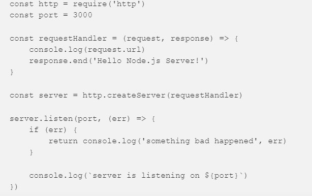
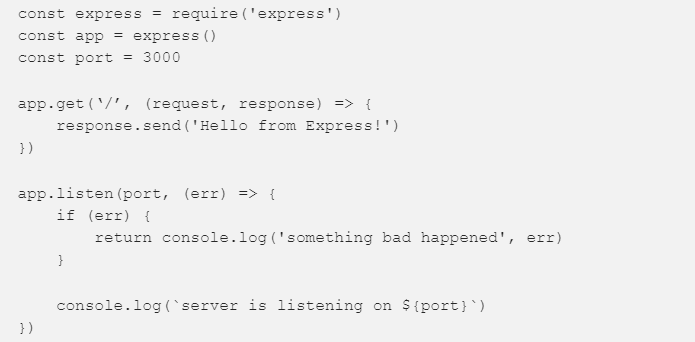
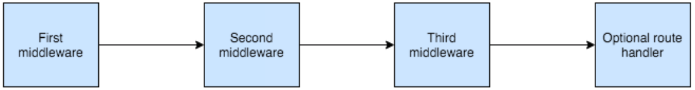
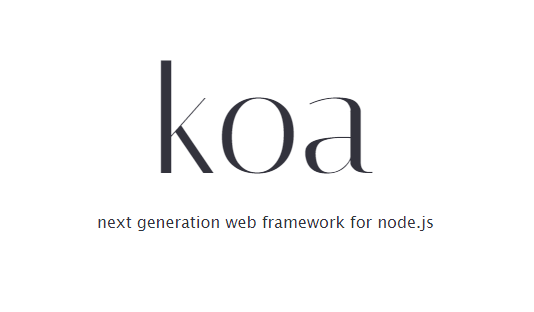
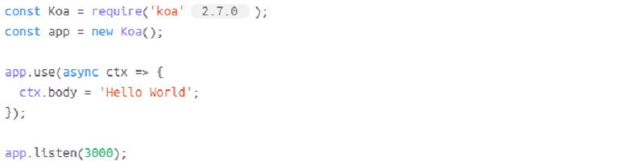

What is node.js?
Node.js developed by Ryan Dahl in 2009 after two years of experimenting on creating webserver components.
This might look like a simple http server example on Node.js.
requestHandler: this function will be called every time a request comes to the server. If you open localhost: 3000 in your browser, two messages will appear in the console.
if (err): error handling: if the port is already busy or there are any other reasons why the server cannot be started, we will receive a notification about it.
for example:
The biggest difference you can notice here is that Express gives you a router by default. You do not need to manually parse the URL to decide what to do, instead you define the application routing using app.get, app.post, app.put and so on, and they are already translated into the corresponding HTTP requests.
one more example
Middleware
Middleware - intermediate processor
You may think of intermediate handlers as Unix pipelines, but for HTTP requests
On the diagram, you can see how the request goes through the conditional Express application. It passes through three intermediate handlers. Each handler can change this request, and then, based on your business logic, the third middleware will send a response, or the request will go to the handler of the corresponding route.
PROS:
CONS:
Jump to...
Koa was created by the development team, as a variant of the express framework of the new generation.
This improved version was developed to create web applications and APIs with enhanced performance.
Accordingly, the creators sought to take into account all the shortcomings of the predecessor and make it more modern and convenient to use.
A typical example of a simple koa.js server
Koa has almost the same functionality and surpasses Express in ease.
PROS:
CONS:
CONCLUSION
Express.js is suitable for:
novice programmers who focus on professional growth in Node JS; large projects involving customization; cases where long-term application support is needed.
Koa.js is suitable for:
both small and large projects that require development in the future; for projects with a high degree of customization; to facilitate long-term application support.
That’s all
Thanks